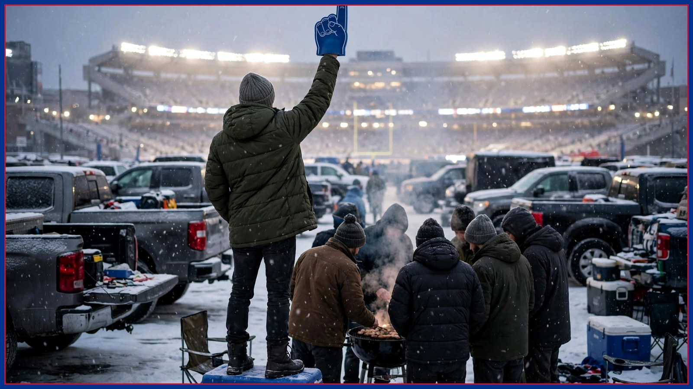

Power Rankings of AFC Teams I Am Choosing to Disrespect This Week
The Chiefs are somehow both washed and inevitable. The Jets are a group project nobody did. This week's official disrespect rankings, compiled responsibly during the bye week.

Welcome back to the only power rankings with the courage to rank on vibes, grudges, and whatever happened most recently. The Bills are 5-1 and spent the bye resting, which gave me seven days to watch the rest of the AFC and take detailed notes on why each of them should be disrespected. Let's begin.
No. 5: The Baltimore Ravens (disrespect level: respectful, unfortunately). You're next on the schedule, your quarterback has spent the week as a league-wide injury mystery, and your season is somehow both alive and on life support. I would love to rank you higher on this list, but it's hard to disrespect a team whose entire fan base is currently refreshing injury reports like it's election night. See you Sunday. Bring the statue.
No. 4: The New England Patriots (disrespect level: nostalgic). Every few years, Patriots fans convince themselves the empire is back because they beat a team with a losing record in October. It's adorable — a retired magician doing card tricks at a children's party and insisting he could still headline Vegas. Sir, we remember. We also remember the last five years. Sit down.
No. 3: The Miami Dolphins (disrespect level: meteorological). The Dolphins are a September team the way a convertible is a January car in Buffalo — technically legal, spiritually unserious. Every year it's the same documentary: fastest show on turf until the temperature drops below 50, at which point the entire offense files a weather complaint. Your stadium has a beach club. Our stadium has a parking lot where a man grills in a blizzard for fun. We are not the same.
No. 2: The New York Jets (disrespect level: structural). The Jets are a group project where nobody did the reading, the presentation is tomorrow, and somehow the loudest guy in the group still thinks it's going great. Decades of drafts, free-agent splashes, prime-time hype — and the most consistent thing about the Jets is the camera finding a fan doing the math on when pitchers and catchers report. I don't even dislike the Jets anymore. I study them, the way scientists study a frog that keeps jumping into the same pond.
No. 1: The Kansas City Chiefs (disrespect level: maximum, permanent, non-negotiable). The Chiefs are simultaneously washed, inevitable, lucky, doomed, and somehow already in the AFC Championship Game in everyone's bracket. Their fans have reached the stage of dynasty where a regular-season win gets a shrug and a regular-season loss gets a congressional inquiry. I disrespect them because they are the mountain, and because somebody in this conference has to say it out loud every week until somebody knocks them off it. Preferably in January. Preferably here.
That's the list. The Bills return from the bye on Sunday against Baltimore, 1 PM ET at Highmark, and a win moves the disrespect index in a healthier direction: outward, at everyone else, where it belongs. Disagree with the rankings? The comments are open, and so is my group chat. Choose wisely.
The BNC Blitz is free: the day's Bills news, one stat that matters, and one take, every morning. Join to keep reading — and never miss the end of a story again.